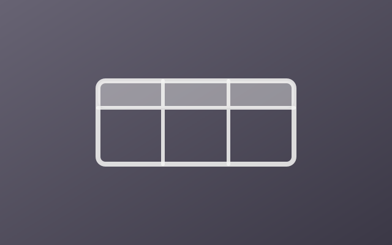
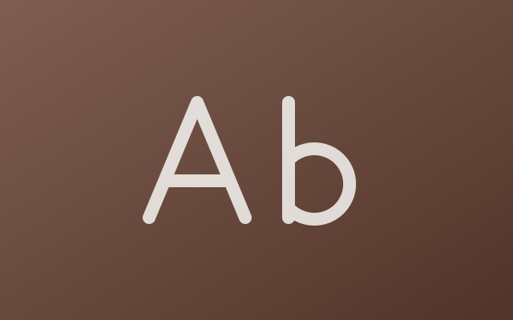
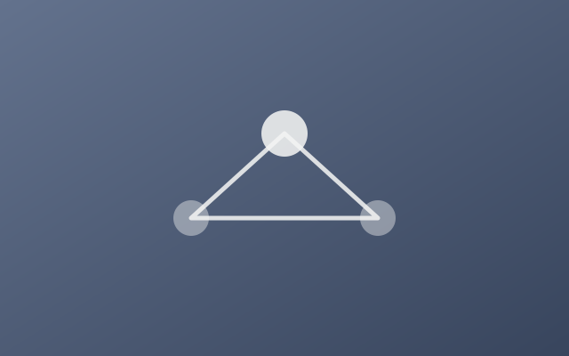

Dieses Handbuch gehört zur Vorlage Example für QuartzControl. Es erklärt die Vorlage und führt zugleich alles vor, was sie kann.
Der Text hier kommt aus einer Markdown-Datei, nicht aus der Konfiguration.
| Title | Description | Area |
|---|---|---|
| Aliases | Making a page reachable under several names. | en/2-formatting/04-links |
| Alignment | Colons in the separator row control the column alignment. | en/2-formatting/07-tables |
| All callout types | Thirteen types with their aliases — and why their colours are set anew here. | en/2-formatting/05-callouts |
| Arrows, tags and emoji | Small things Obsidian converts in passing. | en/2-formatting/13-special |
| Callouts — the basic form | How a callout is built, with and without a title of its own. | en/2-formatting/05-callouts |
| Tables — the basic form | Rows, columns and the header. | en/2-formatting/07-tables |
| Footnotes — the basic form | A marker in the text, the text at the foot of the page. | en/2-formatting/10-footnotes |
| Code blocks | Code over several lines, with a language and a copy button. | en/2-formatting/06-code |
| Formula blocks | Displayed formulas, over several lines and as a matrix. | en/2-formatting/08-math |
| Contents of a cell | What may stand in a cell and what has to be escaped. | en/2-formatting/07-tables |
| Comments | Text that only exists in the source. | en/2-formatting/10-footnotes |
| Data types | Text, number, boolean, list — and how they are displayed. | en/2-formatting/11-properties |
| Displaying the properties | Where the table sits, what it shows and how to change that. | en/2-formatting/11-properties |
| Documents | Embedding PDFs, linking to them and jumping to a particular page. | en/2-formatting/12-media |
| Embedding a page | Showing another page in the middle of this one. | en/2-formatting/04-links |
| Emphasis | Bold, italic, struck through, highlighted — and which plugin delivers which of them. | en/2-formatting/01-text |
| Escaping characters | When Markdown reads something as markup that is meant to be text. | en/2-formatting/13-special |
| External links | Links to the outside — and how you recognise them. | en/2-formatting/04-links |
| Flowcharts | Mermaid — processes and decisions. | en/2-formatting/09-diagrams |
| Foldable callouts | A callout that can be folded away. | en/2-formatting/05-callouts |
| Frontmatter | The fields at the very top of the file and what Quartz does with them. | en/2-formatting/11-properties |
| Headings | Six levels — and why the last two stop shrinking here. | en/2-formatting/02-structure |
| Highlighting lines | Emphasising single lines in a block. | en/2-formatting/06-code |
| Horizontal rules | The dash between sections. | en/2-formatting/02-structure |
| HTML in Markdown | What is let through and where the limit is. | en/2-formatting/13-special |
| Images | Five formats, two notations, sizes — and which format is good for what. | en/2-formatting/12-media |
| 2.1 – Text | Emphasis, special characters and line breaks. | en/2-formatting/01-text |
| 2.2 – Structure | Headings, paragraphs, horizontal rules. | en/2-formatting/02-structure |
| 2.3 – Lists | Unordered, ordered, tasks, nested. | en/2-formatting/03-lists |
| 2.4 – Links | Wikilinks, jump targets, external links, embeds, aliases. | en/2-formatting/04-links |
| 2.5 – Callouts | Thirteen types, foldable and nested. | en/2-formatting/05-callouts |
| 2.6 – Code | Inline, blocks, languages, titles, highlighting. | en/2-formatting/06-code |
| 2.7 – Tables | The basic form, alignment, contents, wide tables. | en/2-formatting/07-tables |
| 2.8 – Mathematics | LaTeX in the text and as a block. | en/2-formatting/08-math |
| 2.9 – Diagrams | Fourteen kinds of Mermaid diagram. | en/2-formatting/09-diagrams |
| 2.10 – Footnotes | Footnotes, variants and comments. | en/2-formatting/10-footnotes |
| 2.11 – Properties | Frontmatter, data types, display. | en/2-formatting/11-properties |
| 2.12 – Media | Images, documents, video and audio. | en/2-formatting/12-media |
| 2.13 – Odds and ends | HTML, escapes, arrows, tags, emoji. | en/2-formatting/13-special |
| 2 – Formatting | Every element Obsidian writes and Quartz renders — source and result side by side, 62 short pages in thirteen sections. | en/2-formatting |
| Code in a sentence | A command in the middle of a sentence. | en/2-formatting/06-code |
| Formulas in a sentence | LaTeX in the middle of a sentence. | en/2-formatting/08-math |
| Languages | Which highlighting for what — with examples. | en/2-formatting/06-code |
| Line breaks | Why a break in the source is not one on the page here — and how to force one. | en/2-formatting/01-text |
| Nested callouts | A callout inside a callout — and where the limit is. | en/2-formatting/05-callouts |
| Nesting and quotes | How deep you can go, and how quotes nest. | en/2-formatting/03-lists |
| Number diagrams | Pies, curves, flows and quadrant charts. | en/2-formatting/09-diagrams |
| Ordered lists | Numbered lists and what the numbers really do. | en/2-formatting/03-lists |
| Paragraphs | How a paragraph comes about and how wide it gets. | en/2-formatting/02-structure |
| Images per colour scheme | Two images, of which only ever one is visible. | en/2-formatting/12-media |
| Process diagrams | States, user journeys and branches. | en/2-formatting/09-diagrams |
| Sequence diagrams | Who says what to whom, and in which order. | en/2-formatting/09-diagrams |
| Special characters | Quotation marks, dashes and ellipses — set the way typography wants them. | en/2-formatting/01-text |
| Structure diagrams | Classes, entities and mind maps. | en/2-formatting/09-diagrams |
| Jump targets | Linking to a heading or to a single block. | en/2-formatting/04-links |
| Task lists | Boxes to tick — and why what is done is marked twice here. | en/2-formatting/03-lists |
| Time diagrams | Gantt plans and timelines. | en/2-formatting/09-diagrams |
| Unordered lists | Bullet lists and their nesting. | en/2-formatting/03-lists |
| Named and repeated footnotes | Names instead of numbers, several references, footnotes inline. | en/2-formatting/10-footnotes |
| Video and audio | Embedding sound and moving images — with what Quartz makes of them on its own. | en/2-formatting/12-media |
| Wide tables | What happens when a table does not fit the column. | en/2-formatting/07-tables |
| Wikilinks | The Obsidian notation for internal links. | en/2-formatting/04-links |



Diese Seite gehört zu Example — der Beispielvorlage für QuartzControl. Ein Überblick über alle Bereiche steht auf der Startseite.
Auf einem schmalen Bildschirm ist die Navigation oben eingeklappt.